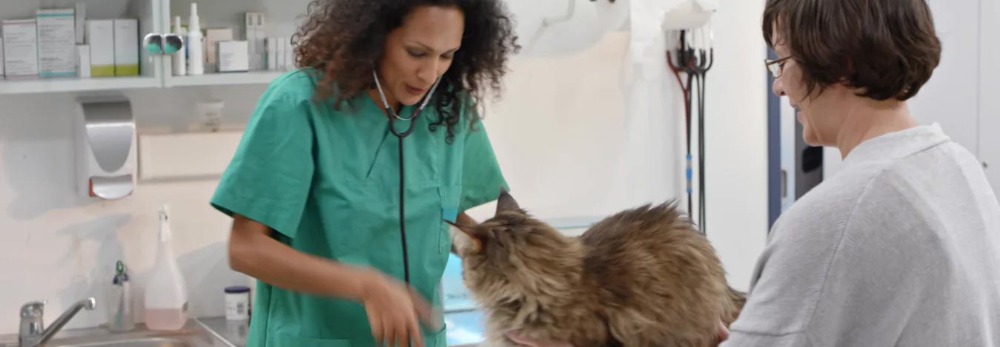
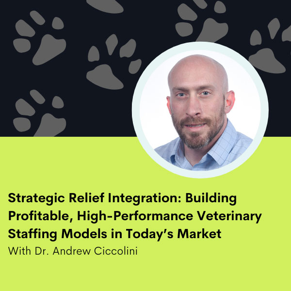

For Veterinary Leaders Ready to Grow
Podcast, panels, and practical strategy for real-world veterinary growth.
The Insights to Grow Your Practice.
Veterinary Business Institute brings together podcast conversations, webinar replays, and growth-focused guidance for veterinarians building stronger teams, healthier margins, better systems, and a more resilient future.
100+ podcast episodes
Leadership and culture insights
Marketing strategy for veterinary practices

Featured Learning Track
Practice growth, retention, marketing, and resilience
★★★★★
Trusted growth conversations for veterinary teams
Practice Growth
Leadership
Team Culture
Staffing
Client Experience
Technology
Marketing
Financial Resilience
Practice Continuity
Practice Growth
Leadership
Team Culture
Staffing
Client Experience
Technology
Marketing
Financial Resilience
Practice Continuity
About Veterinary Business Institute
100+
Podcast episodes shaping modern veterinary leadership
5
Core growth pillars in the featured webinar replay
1
Clear goal: help veterinary practices build a bigger future
Built for veterinarians who want a stronger business, not just a busier schedule.
Veterinary Business Institute is centered on veterinary business education and professional development. Its content is designed to help practice leaders improve operations, strengthen culture, and make smarter growth decisions with practical, real-world guidance.
The platform brings together podcast interviews, webinars, marketing insight, and expert-led conversations so veterinarians can sharpen leadership, streamline systems, and build practices that are profitable, resilient, and people-first.
What VBI Covers
Growth guidance across the parts of a veterinary practice that matter most.
Leadership and Team Culture
Learn how stronger communication, retention systems, and people-first leadership create healthier teams and more stable practices.
Operational and Staffing Strategy
Explore better workflows, relief staffing models, onboarding processes, and practical ways to keep practice operations flexible and sustainable.
Marketing and Digital Visibility
Turn educational content into visibility with local search strategy, positioning, client education, and messaging that attracts the right pet owners.
Technology and Client Experience
Adopt the right tools, reduce friction, improve record-keeping, and deliver more consistent, high-quality client experiences without adding operational chaos.
Featured Episode
Published March 26, 2026

Strategic Relief Integration: Building Profitable, High-Performance Veterinary Staffing Models in Today’s Market
Episode 103 looks at how relief veterinarians are becoming a more strategic part of modern practice growth. The conversation focuses on staffing continuity, relationship-based relief networks, smarter onboarding, and building a more stable clinical schedule.
- Build relationship-based relief networks instead of one-off scheduling.
- Use relief strategically to grow caseload before full-time hiring.
- Prioritize onboarding, feedback, and culture to retain relief support.
- Know your numbers and stay flexible on compensation strategy.
Resource Hub
Use the platform the way modern veterinary teams actually learn.
Podcast Archive
Catch up on the full Veterinary Business Podcast library
Browse recent episodes covering staffing, leadership, growth, AI, technology, and operational decision-making.
Replay LibraryWatch summit and webinar sessions on demand
Review archived sessions on culture, communication, technology, client care, marketing, and future-ready practice strategy.
MarketingConnect education with practical visibility strategy
See how marketing, local presence, and client education fit into the wider veterinary growth picture.
Digital AuditAnalyze your digital marketing with a practice-specific review
Use the complimentary visibility audit to understand your online presence, local SEO, and competitive opportunities.
Ready to Build a Future-Ready Practice?
Turn VBI insight into a clearer growth plan for your veterinary business.
Start with the podcast, review the webinar archive, or book a digital visibility audit to see where stronger marketing and better business systems can unlock the next stage of growth.